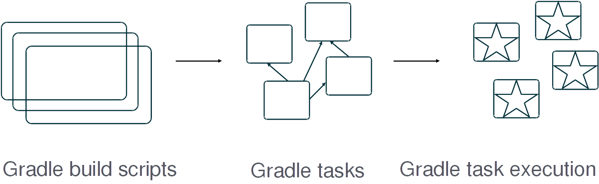
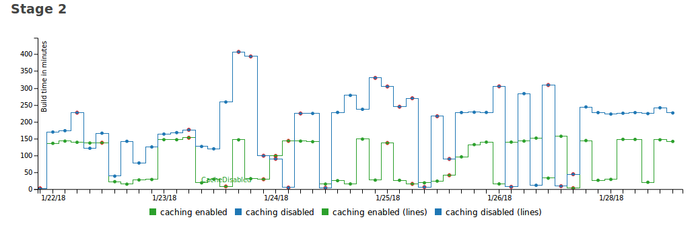
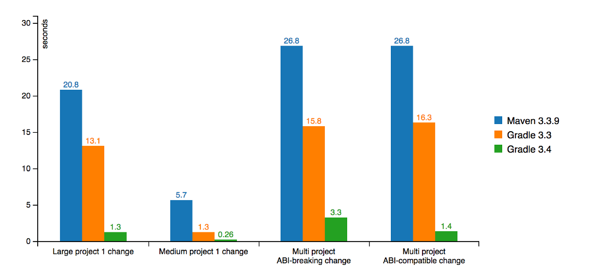
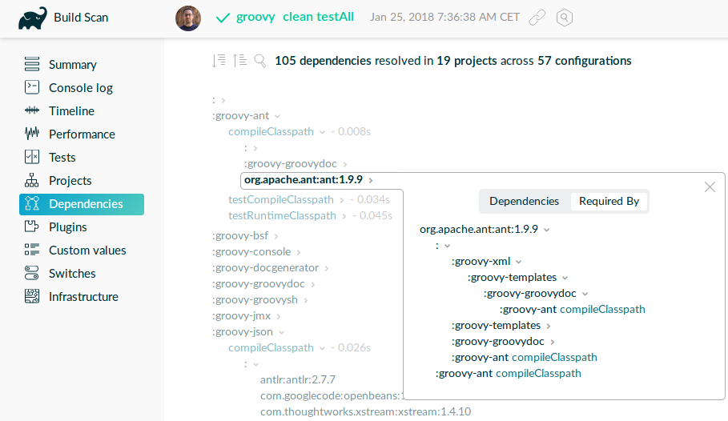

speaker {
name 'Cédric Champeau'
company 'Gradle Inc'
oss 'Apache Groovy committer',
successes 'Static type checker',
'Static compilation',
'Traits',
'Markup template engine',
'DSLs'
failures Stream.of(bugs),
twitter '@CedricChampeau',
github 'melix',
extraDescription '''Groovy in Action 2 co-author
Misc OSS contribs (Gradle plugins, deck2pdf, jlangdetect, ...)'''
}Recouvrer de la productivité avec Gradle 4
Who am I
Agenda
Gradle in a nutshell
Incremental builds
Build cache
Compile avoidance and incremental compilation
Composite builds
Worker API
Kotlin DSL
Dependency management
Build scans
Gradle in a nutshell
Agnostic Build System
Java ecosystem
Groovy, Kotlin, Scala, …
Native ecosystem
C, C++, Swift, …
Android
Misc
Go, Asciidoctor, …
6
Gradle in figures
4.0M downloads / month
35 Gradle Engineers
300K builds/week @LinkedIn
Gradle

A Java library
plugins {
id 'java-library'
}
dependencies {
api 'com.acme:foo:1.0'
implementation 'com.zoo:monkey:1.1'
}A native app
plugins {
id 'cpp-application'
}
repositories {
maven {
url 'http://localhost:8000/'
}
}
dependencies {
implementation 'org.gradle.cpp-samples:math:1.5'
}Native dependency management
Incremental builds
Observation
Typically, not much changes in the build between consecutive invocations of the build.
When little changes in the code, little work should be done by the build.
Reuse of the outcomes of the previous run.
Task inputs / outputs
Only run a task if its inputs or outputs have changed since the previous run.
Inputs → [Task] → Outputs
Example for Compile task:
Task inputs: source files, libraries, compiler configuration, etc. Task outputs: class files
Demo
Learn more
Build cache
Build cache
Reuse outcomes of any previous run (rather than just the last)
Local cache and remote cache
Task output caching
Build cache
Calculate cache key from inputs, use output as cache value
Inputs → [Task] → Outputs
Example for compile task:
Cache key: hash(source files, libraries, compiler configuration, etc.)
Cache value : fileTree(class files)
Demo
Integration with CI

Integration with CI
buildCache {
local {
enabled = !isCI
}
remote(HttpBuildCache) {
url = 'https://my.ge.server/cache/'
push = isCI
}
}Build cache impact

Build cache on Android
Gradle tasks are cacheable as of Android plugin 3.0
Compile avoidance
Compile avoidance
Avoid wasting time compiling source classes that do not have to be compiled.
Compile avoidance
(for all) only recompile classes affected by changed classes
(for all) only recompile on ABI changes
(Java library plugin) api/implementation dependencies separation
Recompile producer only
Performance improvements

Learn more
Incremental compilation
Incremental compilation
Analyze dependencies between classes
Only recompile classes affected by an ABI change
tasks.withType(JavaCompile) {
// will probably be default in 5.0
options.incremental = true
}Composite builds
Composite builds use cases
Fix a bug in a library through app using project
Break down a monolith into multiple repos
Consume latest state of libraries in integrations builds
Demo
Learn more
Worker API
Worker API
API to run task actions in parallel safely
Parallel actions cannot mutate shared state
Supports out-of-process and in-process actions
Worker API
workerExecutor.submit(IsolatedRunner.class, new Action<WorkerConfiguration>() {
@Override
public void execute(final WorkerConfiguration conf) {
conf.setIsolationMode(IsolationMode.PROCESS);
conf.classpath(...);
conf.params(...);
conf.getForkOptions()
.getSystemProperties()
.put(JAVA_IO_TMPDIR, getTemporaryDir());
}
});Kotlin DSL
Kotlin DSL goals
Syntax highlighting
Quick documentation
Navigation to source
Auto-completion / content assist
Refactoring
High execution time performance
Build code is no different to application code!
Demo
Hey, Cédric, open your IDE.
Learn more
Build scans
Build scans
Gain build insights
Improve build performance
Collaborate with colleagues and the community
Build scans

Examples
Groovy build: https://scans.gradle.com/s/a5hebbcavjwmm
Cached build: https://scans.gradle.com/s/n3gnmoatywoei
Gradle Enterprise
Gradle Enterprise
Query scans
Compare scans
Use a high-performance, scalable build cache
Host within your firewall
Road to Gradle 5
Dependency management improvements
variant-aware dependency management
dependency constraints
rich version constraints
Gradle metadata format
What if…
You could tell that some versions are buggy?
You could fix published metadata?
You could lock dependencies?
You could explain that 2 modules are mutually exclusive?
Blacklisting versions
dependencies {
constraints {
implementation('org.foo:awesome-lib') {
version {
prefer '1.2'
reject '1.1'
}
because 'Version 1.1 is buggy'
}
}
}Nicer error messages
Execution failed for task ':buildInit:dependencies'.
> Could not resolve all dependencies for configuration ':buildInit:runtimeClasspath'.
> Module 'com.google.collections:google-collections' has been rejected:
Dependency path 'org.gradle:buildInit:4.6-20180125230000+0000'
--> 'org.codehaus.plexus:plexus-container-default:1.5.5'
--> 'com.google.collections:google-collections' prefers '1.0'
Constraint path 'org.gradle:buildInit:4.6-20180125230000+0000'
--> 'org.gradle:core:4.6-20180125230000+0000'
--> 'org.gradle:baseServices:4.6-20180125230000+0000'
--> 'com.google.collections:google-collections' rejects all versions because of the following reason: Guava replaces google collectionsVariant-aware
> Task :subvola:gorgoneum:teerer:polytonal:dependencyInsight
project :outissue:carnally
variant "debugRuntimeElements" [
com.android.build.api.attributes.BuildTypeAttr = debug
com.android.build.gradle.dependency.VariantAttr = debug (not requested)
org.gradle.usage = java-runtime
com.android.build.gradle.dependency.AndroidTypeAttr = Aar
]New module metadata
{
"formatVersion": "0.3",
"component": {
"group": "test",
"module": "testApp",
"version": "1.0",
"attributes": {
"org.gradle.status": "release"
}
},
"createdBy": {
"gradle": {
"version": "4.5",
"buildId": "6unkpkmor5h4fdn6p6bzdpdovu"
}
},
"variants": [
{
"name": "debug-runtime",
"attributes": {
"org.gradle.native.debuggable": true,
"org.gradle.native.optimized": false,
"org.gradle.usage": "native-runtime"
},
"available-at": {
"url": "../../testApp_debug/1.0/testApp_debug-1.0.module",
"group": "test",
"module": "testApp_debug",
"version": "1.0"
}
},
{
"name": "release-runtime",
"attributes": {
"org.gradle.native.debuggable": true,
"org.gradle.native.optimized": true,
"org.gradle.usage": "native-runtime"
},
"available-at": {
"url": "../../testApp_release/1.0/testApp_release-1.0.module",
"group": "test",
"module": "testApp_release",
"version": "1.0"
}
}
]
}Source dependencies
sourceControl {
vcsMappings {
withModule("org.test:greeter") {
from(GitVersionControlSpec) {
url = "git@github.com:orgtest/greeter.git"
}
}
}
}Metadata rules
withVariant('runtime') {
withDependencies {
it.findAll { it.group == 'org.slf4j' }.each {
it.version { prefer '1.7.10' }
}
}
}Conclusion
Conclusion
Discuss: @CedricChampeau